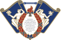

프로그래밍으로 만들어질 미래
쿠러그(KHLUG)는 세상의 모든 IT 기술 및 이와 관련된 분야에 대한 연구 및 개발 활동을 주 목적으로 하는  경희대학교 중앙 IT 동아리입니다.
인류의 미래는 프로그래밍으로 만들어질 것이고, 사람들은 코딩으로 꿈을 펼치게 될 것입니다.
쿠러그는 진보하는 세상에서 중심이 되는 인재를 찾기 위해 코딩 교육, 프로그래밍 스터디, 연구 프로젝트, 산출물 발표 세미나와 같은 활동을 하고 있습니다.
우리는 전공에 얽매이지 않습니다.
프로그래밍에 대해 하나도 모르시는 분들을 위해 프로그래밍 언어를 포함한 코딩 기초 교육과 전공 수준의 몇 가지 응용 교육이 준비되어 있습니다. 아이디어가 있는 분은 다른 회원들과 함께 서비스를 개발해보실 수 있습니다. 프로그래밍 전문가라면 남들과 기술을 공유하거나 쿠러그의 연구 지원 시스템을 활용하여 연구를 시작해보실 수도 있습니다.
쿠러그의 모든 회원은 크게 14개로 나누어진 관심 분야를 하나 이상 가지고 있습니다.
- 웹/어플리케이션 서비스 사용자와 상호작용을 하는 소프트웨어 프로그램을 만듭니다.
- 사물인터넷/로봇 하드웨어와 소프트웨어가 결합되어 동작하는 기계를 만듭니다.
- 게임/가상현실 사용자가 가상의 공간에서 꿈을 펼칠 수 있도록 합니다.
- 보안/해킹 데이터가 유출되거나 변조되지 않도록 내외부의 공격으로부터 방어합니다.
- 인공지능/머신러닝 소프트웨어가 스스로 사물과 자신을 인지하고 사고할 수 있도록 합니다.
- 영상처리/시각화 자료나 정보를 시각화하거나 시각적인 데이터, 컴퓨터 그래픽을 다룹니다.
- 데이터베이스/클라우드 자료를 효율적으로 저장하고 접근과 분석이 쉽도록 합니다.
- 네트워크/통신 데이터가 효과적이고 빠르게 전송되도록 합니다.
- 운영체제/미들웨어 어플리케이션 하단에서 작동하는 하위 시스템을 개발합니다.
- 어셈블리/전처리 코드가 하드웨어 위에서 작동하기 위해 처리되는 과정을 다룹니다.
- 하드웨어/전자회로 소프트웨어가 임베디드되기 위한 하드웨어를 설계하고 제작합니다.
- 알고리즘/전산수학 효율적인 프로그램 로직을 만들기 위해 연구합니다.
- UX/UI 디자인 기술과 사용자가 직접적으로 맞닿는 부분을 설계합니다.
- 데이터 사이언스/통계학 데이터를 수집 및 분석하여 유효한 패턴을 파악하고 인사이트를 추출합니다.
당신은 어떤 분야에 관심이 있나요?
쿠러그에서 당신과 같은 관심을 가진 회원들과 함께 해보세요. 문은 누구에게나 열려있습니다.
쿠러그는 경희대학교의 여러 단체들과 기술·자원 교류를 하고 있습니다.
- 중앙동아리연합회 국제캠퍼스 중앙동아리 연합
 뇌트워크 중앙 뇌과학 동아리
뇌트워크 중앙 뇌과학 동아리
 T.G.WinG 소프트웨어융합대학 학술 동아리
T.G.WinG 소프트웨어융합대학 학술 동아리
 N.E.T 소프트웨어융합대학 학술 동아리
N.E.T 소프트웨어융합대학 학술 동아리
- 지금 이 순간에도 보다 많은 사람들과 지식을 나누기 위해 노력 중입니다. 언제든지 연락 주세요!
또한 학교 밖의 여러 단체들과도 교류를 하고 있습니다.
 SUSC 대학 IT 동아리 교류 단체
SUSC 대학 IT 동아리 교류 단체
 HeXA UNIST 정보보안 및 개발 동아리
HeXA UNIST 정보보안 및 개발 동아리
 RCE 경북소프트웨어고등학교 해킹동아리
RCE 경북소프트웨어고등학교 해킹동아리
- 이외에도 여러 단체와 교류하며 우리의 경험을 넓히고자 노력 중입니다. 여러분의 연락을 기다립니다!
그리고 아래 기관과 함께 매년 경희대학교 소프트웨어 해커톤  khuthon을 개최하고 있습니다.
khuthon을 개최하고 있습니다.
- 경희대학교 소프트웨어융합대학 컴퓨터공학부 및 소프트웨어융합학과
- 경희대학교 AI·SW 교육단 SW중심대학사업과 연계한 총장 직속의 거교적 사업 기관
- 경희대학교 SW중심대학사업단 과학기술정보통신부 및 정보통신기술진흥센터(IITP)의 SW중심대학지원사업
 경희대학교 실감미디어 혁신융합대학 사업단 첨단분야 혁신융합대학 컨소시엄 사업단
경희대학교 실감미디어 혁신융합대학 사업단 첨단분야 혁신융합대학 컨소시엄 사업단
 아주대학교 SW융합교육원 아주대학교 SW중심대학사업단 연계 교육원
아주대학교 SW융합교육원 아주대학교 SW중심대학사업단 연계 교육원
- 해커톤은 계속해서 확장되고 있습니다!
뿐만 아니라 아래 동아리와 함께 경희대학교 IT 동아리 연합 세미나 「KHUITCON」을 개최하고 있습니다.
 GDG on Campus KHU 경희대학교의 Google Devleopment Student Club
GDG on Campus KHU 경희대학교의 Google Devleopment Student Club
 AWS Cloud Clubs KHU AWS 공식 대학생 커뮤니티 경희대학교 지부
AWS Cloud Clubs KHU AWS 공식 대학생 커뮤니티 경희대학교 지부
 9oormthonUNIV 카카오 및 구름과 함께하는 전국 대학 IT 연합 동아리
9oormthonUNIV 카카오 및 구름과 함께하는 전국 대학 IT 연합 동아리
 KHUDA 경희대학교 데이터분석 및 AI 동아리
KHUDA 경희대학교 데이터분석 및 AI 동아리
- 쿠러그는 함께 성장할 수 있는 기회를 언제나 환영합니다!
쿠러그에 대한 아끼지 않는 지원을 통해 우리에게 힘을 주시는 분들도 계십니다.
- 경희대학교 중앙동아리연합회 경희대학교 국제캠퍼스 중앙동아리 연합
- 경희대학교 학생지원센터 미래혁신단 소속 교내지원부서
- 경희대학교 SW중심대학사업단 과학기술정보통신부 및 정보통신기술진흥센터(IITP)의 SW중심대학지원사업
- 그리고 동아리를 항상 생각해주시는 우리 회원들과 졸업하신 선배님들...
쿠러그는 전공과 관계 없이 누구나 활동할 수 있습니다만, 각종 시설은 국제캠퍼스 학생회관에 마련되어 있습니다.
동아리방은 국제캠퍼스 학생회관 405호, 406호, 410호이며, 서버실(409호) 또한 있습니다.
경기도 용인시에 위치한 국제캠퍼스는 수도권 전철 수인분당선 영통역에서 도보로 15분 거리에 위치해 있습니다.
자가용 및 대중교통 등의 구체적인 경로는 학교 홈페이지에 자세히 나와 있습니다.
> 경희대학교 국제캠퍼스 오시는 길 (학교 홈페이지)
교내에 진입하는 광역 M5107, 좌석 5100, 좌석 1112, 좌석 1560, 좌석 7000, 일반 9 번 버스(캠퍼스 내에서 승하차 시 무료)를 타고 '사색의광장' 정류장에서 하차하시면 정면에 보이는 중앙도서관 오른쪽에 학생회관 건물이 있습니다.
쿠러그는 기본적으로 모든 업무를 전산으로 처리하고 기록하는 것을 원칙으로 하고 있습니다.
동아리방에 찾아오셔도 원하시는 안내를 받지 못하실 수도 있으며, 특히 가입 신청은 온라인으로만 받고 있습니다.
쿠러그의 활동 모습은 Hello 블로그와 인스타그램, 페이스북 페이지에서 보실 수 있습니다.
궁금하신 점이 있으면 we_are@khlug.org로 이메일 보내주시기 바랍니다.